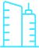

МАРШРУТ ЭКСКУРСИИ:

Перемещение экскурсантов предполагается на экскурсионном автобусе

Кампус Евразийского НОЦ
ул. Заки
Валиди, 32/2

Лаборатории Репродуктивной биологии и
клонирования
растений Института природы и человека УУНиТ
ул. Заки Валиди, д. 32/А
БГМУ
парковка по ул. Театральная или
Пушкина
продолжение маршрута на выбор
Южно-Уральский Ботанический сад-институт –
парковка у остановки «Республиканский выставочный комплекс»
по стороне ул.
Менделеева,
д.195

Всероссийский центр глазной и пластической
хирургии
ул. Зорге, д. 67/1

Федеральный аккредитационный центр ФГБОУ ВО
БГМУ
Минздрава России
ул. К.Маркса, д.50